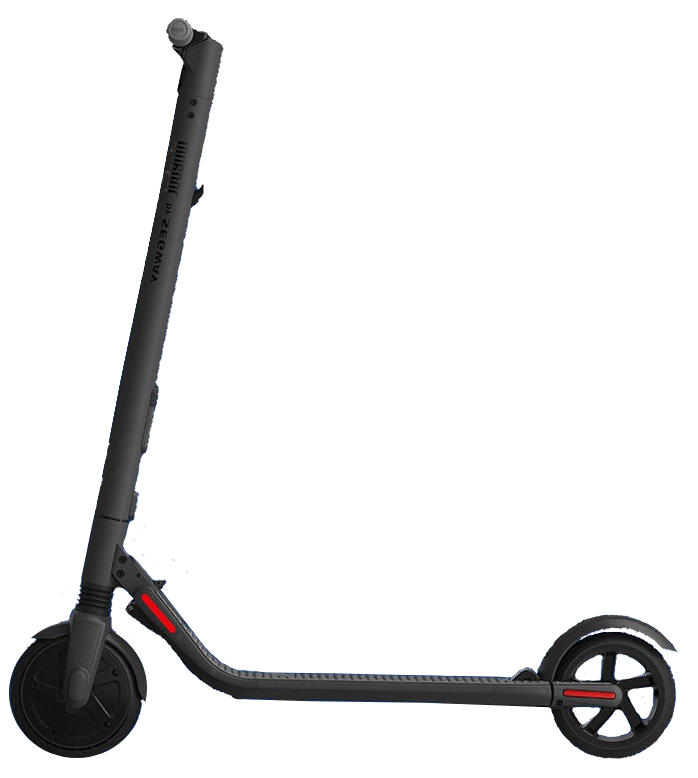
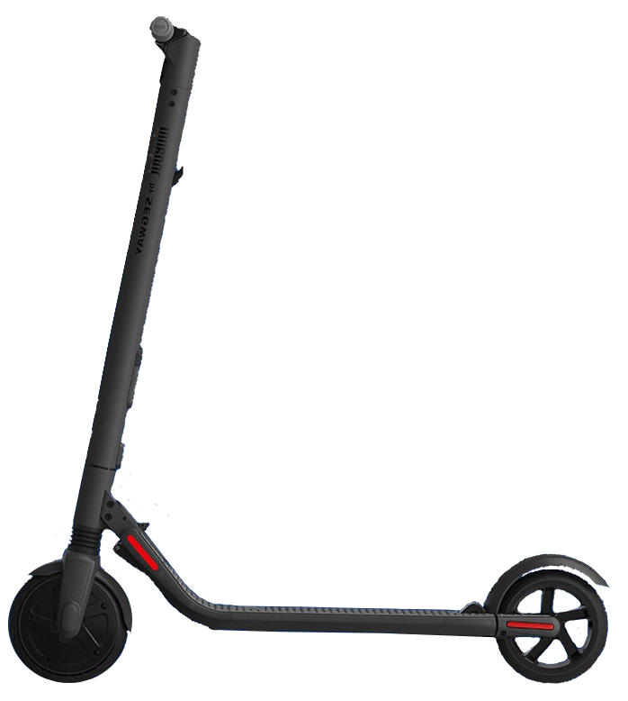
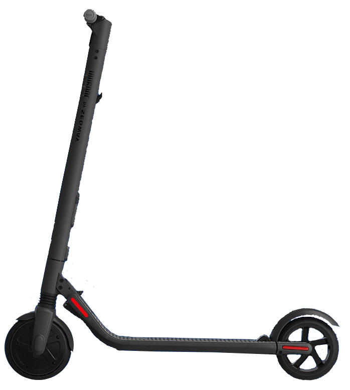
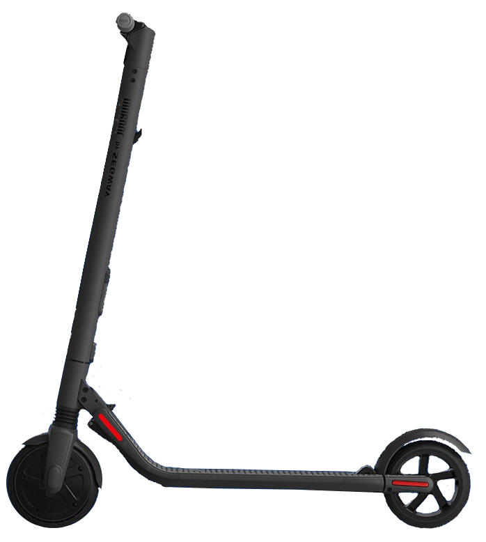

Home
Especificaciones
Multimedia
Manual de uso
Ventas y Contacto
Utilice un paño húmedo y suave para limpiar la unidad principal. La suciedad difícil de eliminar se puede frotar con un cepillo de dientes y pasta de dientes, luego se limpia con un paño suave y húmedo. Los arañazos en las piezas de plástico se pueden pulir con papel abrasivo de grano fino.
No lave su KickScooter con alcohol, gasolina, acetona u otros solventes corrosivos/volátiles. Estas sustancias pueden dañar la apariencia y estructura interna de su KickScooter. No lave su KickScooter con una hidrolavadora o una manguera.
Asegúrese de que el KickScooter esté APAGADO, que el cable de carga esté desenchufado y que la tapa de goma del puerto de carga esté bien sellada antes limpieza; de lo contrario, puede dañar los componentes electrónicos.
Guarde su KickScooter en un lugar fresco y seco. No lo guarde al aire libre durante largos períodos de tiempo.
Los extremos (tanto frío como calor) acelerarán el proceso de envejecimiento de los componentes de plástico y pueden reducir la vida útil de la batería.
No almacene ni cargue la batería a temperaturas fuera de los límites establecidos (consulte las Especificaciones).
Revise las leyes y regulaciones locales con respecto al reciclaje y/o desecho de baterías. Una batería bien mantenida puede funcionar bien incluso después de muchos kilómetros de conducción. Cargue la batería después de cada viaje y evite agotar la batería por completo. Cuando se utiliza a temperatura ambiente (22 °C [70 °F]), la autonomía y el rendimiento de la batería son óptimos; mientras que usarlo en temperaturas inferiores a 32 °F (0 °C) pueden disminuir el alcance y el rendimiento. Recuerda cargar la batería después de cada uso. Drenar completamente la batería puede causar daño permanente a la batería. Los componentes electrónicos dentro de la batería registran el estado de carga y descarga de la batería; daño causado por la descarga excesiva o insuficiente no estará cubierta por la Garantía limitada.
No intente desarmar la batería, hay riesgo de fuego y no hay piezas reparables por el usuario.
 


